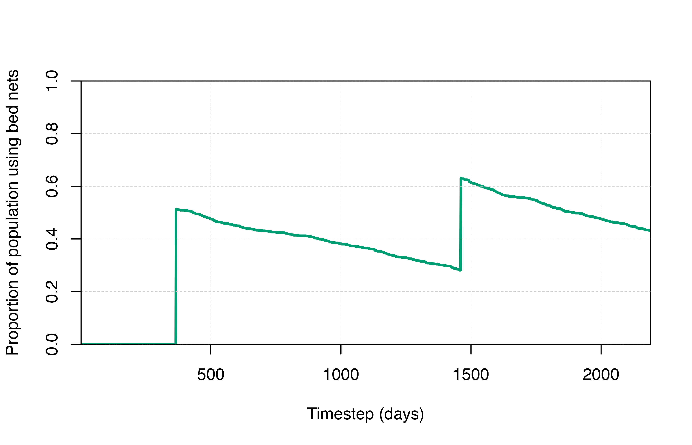

VectorControl_Bednets.Rmd
# Load the requisite packages:
library(malariasimulation)
# Set colour palette:
cols <- c("#E69F00", "#56B4E9", "#009E73", "#F0E442", "#0072B2", "#D55E00", "#CC79A7")Long-lasting insecticide-treated bed nets are a highly effective
intervention to prevent malaria. The effects of insecticide-treated bed
net distribution campaigns can be simulated using
malariasimulation. The model provides the user with the
flexibility to specify parameters that describe the net distribution
campaign (e.g. timing, coverage, and target population) and the bed nets
distributed (e.g. efficacy, longevity). We will illustrate this through
an example with two bed net distributions, once per year.
We can create a few plotting functions to visualise the output.
# Plotting functions
plot_prev <- function() {
plot(x = output$timestep, y = output$n_detect_730_3650 / output$n_730_3650,
type = "l", col = cols[3], lwd = 1,
xlab = "Time (days)", ylab = expression(paste(italic(Pf),"PR"[2-10])),
xaxs = "i", yaxs = "i", ylim = c(0, 1))
lines(x = output_control$timestep, y = output_control$n_detect_730_3650 / output_control$n_730_3650,
col = cols[5], lwd = 1)
abline(v = bednetstimesteps, col = "black", lty = 2, lwd = 1)
text(x = bednetstimesteps + 10, y = 0.95, labels = "Bed net int.", adj = 0, cex = 0.8)
grid(lty = 2, col = "grey80", lwd = 0.5)
legend("bottomleft", box.lty = 0, bg = "white",
legend = c("Prevalence for bed net scenario","Prevalence for control scenario"),
col = c(cols[3], cols[5]), lty = c(1,1), lwd = 2, cex = 0.8, y.intersp = 1.3)
}Use the get_parameters() function to generate the list
of parameters for a perennial profile, accepting the default values to
run the simulation from an equilibrium starting point.
year <- 365
sim_length <- 6 * year
human_population <- 1000
starting_EIR <- 50
simparams <- get_parameters(
list(human_population = human_population)
)
simparams <- set_equilibrium(parameters = simparams, init_EIR = starting_EIR)
output_control <- run_simulation(timesteps = sim_length, parameters = simparams)It is also possible to use the set_species() function to
account for 3 different mosquito species in the simulation. In this
case, the matrices would need to have additional column corresponding to
each mosquito species. For example, if we specified that there were 3
species of mosquitoes in the model and nets were distributed at two
timesteps, then the matrices would have 2 rows and 3 columns. If you are
not already familiar with the set_species() function, see
the Mosquito
Species vignette.
The default parameters are set to model Anopheles gambiae.
simparams$species
#> [1] "gamb"
simparams$species_proportions
#> [1] 1Having established a base set of parameters, we can now create a copy
of this parameter list and update it to specify a net distribution
campaign. In the example below, we distribute bed nets to a random 50%
of the population every three years. It is possible to change the
characteristics of the bed nets for each distribution timestep if
different types of bed nets are distributed that have different
insecticides, different levels of insecticide resistance, etc. This can
be done by modifying the matrices for dn0, rn,
rnm, and gamman. Because we are using the
default proportions of mosquito species and there are two timesteps when
nets are distributed, the matrices for dn0,
rn, and rnm have 1 column and 2 rows.
The parameter values for pyrethroid-only and pyrethroid-PBO nets at various resistance levels can be found in Table S1.3 in the Supplementary Appendix 2 of Sherrard-Smith, et al., 2022.
bednetstimesteps <- c(1, 4) * year # The bed nets will be distributed at the end of the first and the 4th year.
bednetparams <- set_bednets(
simparams,
timesteps = bednetstimesteps,
coverages = c(.5, .5), # Each round is distributed to 50% of the population.
retention = 5 * year, # Nets are kept on average 5 years
dn0 = matrix(c(.533, .533), nrow = 2, ncol = 1), # Matrix of death probabilities for each mosquito species over time
rn = matrix(c(.56, .56), nrow = 2, ncol = 1), # Matrix of repelling probabilities for each mosquito species over time
rnm = matrix(c(.24, .24), nrow = 2, ncol = 1), # Matrix of minimum repelling probabilities for each mosquito species over time
gamman = rep(2.64 * 365, 2) # Vector of bed net half-lives for each distribution timestep
)
output <- run_simulation(timesteps = sim_length, parameters = bednetparams)It is important to understand the difference between the input
coverages argument of set_bednets() and the
resulting population bed net usage over time in the model. When we set
coverages in the above example to 0.5, we are telling the model to
distribute bed nets to a random 50% of the population at year one and to
a random 50% of the population at year 4. However, the level of average
bed net usage is not necessarily equal to 50%. Between these time
points, bed net use will slowly decline over time (in reality this
decline stems from things like disuse, holes in nets, lost nets,
etc.).
The average population bed net usage will be influenced by:
set_bednets()gamman)The output from malariasimulation::run_simulation() has
a variable n_use_net that shows the number of people using
bed nets at any given timestep. We can visualise the proportion of the
population using bed nets over time to understand how bed net usage
changes.
output$prop_use_net <- output$n_use_net / human_population
plot(x = output$timestep, y = output$prop_use_net, type = "l",
col = cols[3], lwd = 2.5, ylim = c(0,1),
xlab = "Timestep (days)", ylab = "Proportion of population using bed nets",
xaxs = "i", yaxs = "i")
grid(lty = 2, col = "grey80", lwd = 0.5)
axis(side = 1, lty = 1, col = "black", pos = 0); axis(side = 2, lty = 1, col = "black")
netz package
The netz
package is a useful tool to help set up bed nets in
malariasimulation. malariasimulation takes as
an input the proportion of the population who were distributed a bed net
at specific time points, but net distribution or use data are now always
available for a specific region or country. netz has
functionality to estimate modelled population usage over time in the
simulation for a given set of input distributions. It can also help to
fit the input coverages to usage data.
See this
vignette from the netz package that demonstrates how to
estimate population bed net usage from an input distribution.